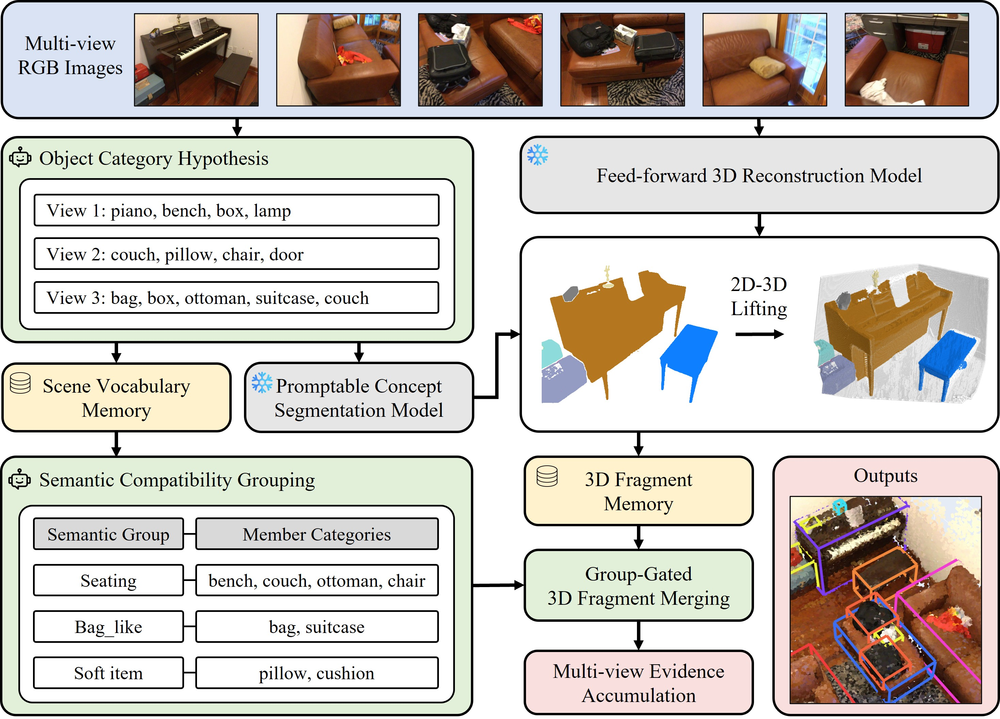

1Sungkyunkwan University 2Yonsei University

| Method | Pose-free | Zero-shot | ScanNet20 | ScanNet60 | ||
|---|---|---|---|---|---|---|
| mAP25 | mAP50 | mAP25 | mAP50 | |||
| Point cloud-based | ||||||
| Det-PointCLIPv2ICCV 23 | – | ✗ | – | – | 0.2 | – |
| 3D-CLIPICML 21 | – | ✗ | – | – | 4.0 | – |
| OV-3DETCVPR 23 | – | ✗ | 18.0 | – | – | – |
| CoDaNeurIPS 23 | – | ✗ | 19.3 | – | 9.0 | – |
| INHAECCV 24 | – | ✗ | – | – | 10.7 | – |
| GLISECCV 24 | – | ✗ | 20.8 | – | – | – |
| ImOV3DNeurIPS 24 | – | ✗ | 21.5 | – | – | – |
| OV-Uni3DETRECCV 24 | – | ✗ | 25.3 | – | 19.4 | – |
| Zoo3D0CVPR 26 | – | ✓ | 34.7 | 23.9 | 27.1 | 18.7 |
| Zoo3D1CVPR 26 | – | ✗ | 37.2 | 26.3 | 32.0 | 20.8 |
| Multi-view image-based | ||||||
| OV-Uni3DETRECCV 24 | ✗ | ✗ | – | – | 11.2 | – |
| OpenM3DICCV 25 | ✗ | ✗ | 19.8 | 7.3 | – | – |
| Zoo3D0CVPR 26 | ✗ | ✓ | 30.5 | 17.3 | 22.0 | 10.4 |
| Zoo3D1CVPR 26 | ✗ | ✗ | 32.8 | 15.5 | 23.9 | 10.8 |
| Group3D (Ours) | ✗ | ✓ | 51.1 | 27.4 | 29.1 | 13.9 |
| Zoo3D0CVPR 26 | ✓ | ✓ | 24.2 | 8.8 | 13.3 | 4.1 |
| Zoo3D1CVPR 26 | ✓ | ✗ | 27.9 | 10.4 | 15.3 | 5.6 |
| Group3D (Ours) | ✓ | ✓ | 41.2 | 18.5 | 22.3 | 8.5 |
Zoo3D0 and Zoo3D1 denote two variants of Zoo3D: zero-shot and self-supervised.
We compare Group3D with prior open-vocabulary 3D detection approaches under two regimes, pose-known and pose-free. We focus exclusively on the multi-view RGB setting and report comparisons to both point cloud-based open-vocabulary detectors and multi-view image-based pipelines.
| Method | Pose-free | Zero-shot | ScanNet200 | ARKitScenes | ||
|---|---|---|---|---|---|---|
| mAP25 | mAP50 | mAP25 | mAP50 | |||
| Posed images | ||||||
| OpenM3DICCV 25 | ✗ | ✗ | 4.2 | – | – | – |
| Zoo3D0CVPR 26 | ✗ | ✓ | 14.3 | 6.2 | – | – |
| Zoo3D1CVPR 26 | ✗ | ✗ | 16.5 | 6.3 | – | – |
| Group3D (Ours) | ✗ | ✓ | 17.9 | 8.7 | 20.5 | 5.9 |
| Unposed images | ||||||
| Zoo3D0CVPR 26 | ✓ | ✓ | 8.3 | 2.9 | 13.0 | 2.6 |
| Zoo3D1CVPR 26 | ✓ | ✗ | 10.7 | 3.8 | 16.1 | 3.5 |
| Group3D (Ours) | ✓ | ✓ | 12.6 | 5.7 | 18.4 | 4.5 |
Zoo3D0 and Zoo3D1 denote two variants of Zoo3D: zero-shot and self-supervised.
Group3D consistently outperforms prior methods on ScanNet200 (200-category) and ARKitScenes in both pose-known and pose-free settings, demonstrating strong generalization to larger open-vocabulary taxonomies and cross-domain 3D scenes.
@inproceedings{kim2026group3d,
title = {Group3D: MLLM-Driven Semantic Grouping for
Open-Vocabulary 3D Object Detection},
author = {Kim, Youbin and Park, Jinho and Park, Hogun and Park, Eunbyung},
booktitle = {arXiv},
year = {2026}
}